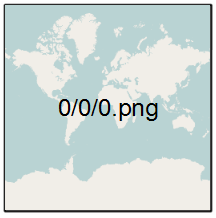
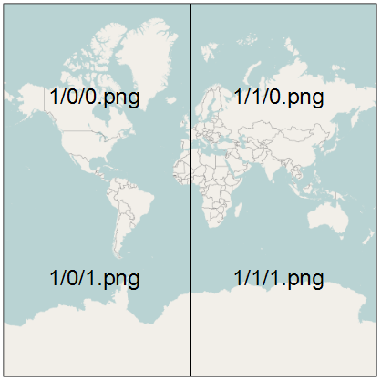
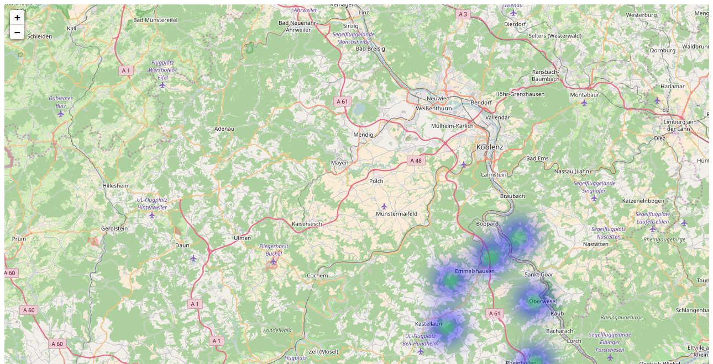

|
Guten Morgen |
Hier und Jetzt!
- Wer bin ich
- Was solltest du mitbringen
- Was machen wir konkret in den nächsten 45 Minuten?
Let's learn Leaflet
In vier Schritten eine Karte zaubern!
Wir beginnen mit einer ganz einfachen HTML-Datei
|
Integriere die notwendigen JavaScript und Cascading Style Sheet (CSS) Dateien
|
Erstelle ein <div>-Element in dem die Karte angezeigt werden soll
|
Nun wird es spannend: Erstelle das Karten-Objekt
|
Füge einen Karten-Layer zur Karte hinzu
|
Koordinaten todo
Wie weiß Leaflet welche Kacheln angezeigt werden sollen
Zoomstufe 0; Kachelanzahl: 1
Kachelbreite 40.038 km; 1 Pixel entspricht 156 km

Zoomstufe 1; Kachelanzahl: 4
Kachelbreite 20.019 km; 1 Pixel entspricht 78 km

Zoomstufe 2; Kachelanzahl: 16
Kachelbreite 5.005 km; 1 Pixel entspricht 39 km
| Zoomstufe | Kachelanzahl | Die Kachelbreite entspricht | Ein Pixel entspricht |
|---|---|---|---|
| 0 | 1 | 40.038 km | 156 km |
| 1 | 4 | 20.019 km | 78 km |
| .. | .. | .. | .. |
| 18 | 69 Mrd. | 153 m | 0,6 m |
| 19 | 275 Mrd. | 76 m | 0,3 m |
Die vollständige Tabelle findet Ihr unter der Adresse http://wiki.openstreetmap.org/wiki/Zoom_levels.
http://{s}.tile.osm.org/{z}/{x}/{y}.png
https://{s}.tile.thunderforest.com/landscape/{z}/{x}/{y}.png?apikey=x
http://{s}.tile.osm.org/{z}/{x}/{y}.png
https://{s}.tile.thunderforest.com/landscape/{z}/{x}/{y}.png?apikey=x
Thunderforest (https://thunderforest.com/)
API Key notwendig
|
Stamen (https://stamen.com/)
Künstlerische Karten
Eine zusätzliche JavaScript-Datei ist notwendig. |
Weitere Anbieter:
http://wiki.openstreetmap.org/wiki/Tiles
OpenCycleMap - OpenSkiMap - OpenSeeMap
Images als Layer – Web-Map-Service
Sie haben eine Satellitenaufnahme und möchten diese als Layer verwenden.
- Eine Möglichkeit wäre ein Umwandeln dieser Satellitenaufnahme in 275 Milliarden Kacheln - es gibt alternative Techniken.
-
Eine Alternative zur beschriebenen Kachel-Technik ist der
Web-Map-Service. - Ein Web-Map-Service (WMS) ist eine Schnittstelle die Auszüge aus Landkarten über das Internet anbietet.
- Die Anfrage liefert ein georeferenziertes Rasterbild zurück.
Beispielweise bietet der Deutsche Wetterdienst (DWD) WMS Dienste mithilfe der Open Source Software Geoserver.
Die Karten kennt Ihr von vielen Apps. Neben den amtlichen Warnungen gibt es auch andere Themen wie Pollenflug Gefahrenindex.
<!DOCTYPE HTML>
<html>
<head>
<title>Eine OSM Karte mit Leaflet</title>
<link rel="stylesheet" href="../leaflet/leaflet.css" />
<script src="../leaflet/leaflet.js"></script>
</head>
<body>
<div style="height: 700px;" id="mapid"></div>
<script>
var mymap = L.map('mapid').setView([50.27264, 7.26469], 7);
L.tileLayer('http://{s}.tile.osm.org/{z}/{x}/{y}.png').addTo(mymap);
var dwd = L.tileLayer.wms("https://maps.dwd.de/geoserver/dwd/wms", {
format: 'image/png',
transparent: true,
layers:'dwd:Warngebiete_Kreise',
attribution: "Deutscher Wetterdienst"
}).addTo(mymap);
var dwd = L.tileLayer.wms("https://maps.dwd.de/geoserver/dwd/wms", {
format: 'image/png',
transparent: true,
layers:'dwd:Warnungen_Gemeinden_vereinigt',
attribution: "Deutscher Wetterdienst"
}).addTo(mymap);
</script>
</body>
</html>
Mit obigem Aufruf erhält man ein speziell zusammengestelltes Bild vom DWD Geo Webservice - sofern Warnungen vorhanden sind.
Erinnert ihr euch an den 27. Juli 2017?

Weitere Informationen beim Deutschen Wetterdienst.
|
Die Karte mit Daten bestücken
Ein Punkt
|
Ein Marker
|
Ein Polyline
|
Ein Polygon
|
Ein Rectangle
|
Ein Circle
|
Ein MultiPolygon
|
Ein MultiPolyline
|
Ein LayerGroup
|
Ein FeatureGroup
|
Ein Popup
|
GeoJSON einmal genau angeguckt
Die Wurzeln von GeoJSON
XML wurde 1998 veröffentlicht, um Daten zwischen Maschinen austauschen zu können.
-
Durch das Tag-System von XML werden oft kleine Datenbestände sehr aufgebläht und sind so unübersichtlich.
<joomlers> <number>1721</number> <vorname>Astrid Günther</vorname> </joomlers> „joomlers“: { „number“: „1721“, „vorname“: „Astrid Günther“ }, - Da JSON selbst gültiges Javascript darstellt, kann es direkt ausgeführt werden.
- Im Gegensatz zu XML ist JSON nicht beschreibend oder deklarativ.
- GeoJSON ist ein JSON Format, dass sich auf Geodaten spezialisiert hat.
GeoJSON Objekte
Im Juni 2008 wurde die Formatspezifikation verabschiedet.Im August 2016 wurde die RFC (Requests for Comments) 7946 veröffentlicht.
http://geojson.org/
Position
- Das wichtigste Element beim Arbeiten mit Geodaten ist die Beschreibung des Punktes auf der Erde, dem die Geodaten zugeordnet werden.
- Diesen Wert kennen wir auch unter dem Namen Koordinate.
- Eine Koordinate ist eine Zahlenkombination. Jede Zahl in einer Koordinate steht für eine Dimension.
- Die Koordinaten werden in JSON in im Dezimalformat formatiert.
- Koordinaten in GeoJSON: [Länge, Breite, Höhe]Wir beschränken uns hier auf zwei Dimensionen | Die vierte Dimension ist die Zeit | Beachte die Reihenfolge
Point | Multipoint
Ein Point – also ein Punkt – ist die einfachste Geometrie in GeoJSON. Die genaue Schreibweise ist

|
|

|
|
LineStrings | MultiLineString
Um eine Linie darzustellen, benötigen Sie mindestens zwei Punkte. Die Linie ist dann die Verbindung zwischen diesen Punkten.

|
|

|
|
Linien und Punkte sind die beiden einfachsten Geometrieformen.
Punkte und Linien haben keine Fläche – somit gibt es auch kein
Außen und kein Innen.
Polygone
Polygone verfügen über eine Fläche. Es gibt also einen Innenbereich, der sich von einem Außenbereich unterscheidet.Und hinzu kommt: Der Innenbereich kann Löcher haben!

|
|
|
Polygone
Es kann eine beliebige Anzahl von Innenringen geben, einschließlich null Innenringe. Wenn das Polygon über keinen Innenring verfügt bedeutet dies, dass das Polygon keine Löcher hat.
|
Multipolygon

|
|

|
|
GeometryCollection
{
"type": "Feature",
"geometry": {
"type": "GeometryCollection",
"geometries": [{
"type": "Point",
"coordinates": [0, 0]
}, {
"type": "LineString",
"coordinates": [[0, 0], [1, 0]]
}]
},
"properties": {
"name": "Der Name dieser GeometryCollection"
}
}
Feature
{
"type": "Feature",
"geometry": {
"type": "Polygon",
"coordinates": [[30, 20], [45, 40], [10, 40], [30, 20]]
},
"properties": {
"prop0": "value0",
"prop1": {"this": "that"},
"prop2": true,
"prop3": null,
"prop4": ["wert1", "wert2", "wert3"],
"prop5": 0.0
}
}
FeatureCollection
{
"type": "FeatureCollection",
"features": [
{
"type": "Feature",
"geometry": {
"type": "Point",
"coordinates": [0, 0]
},
"properties": {
"name": "Der Name des Features"
}
}
]
}
Grenzen von GeoJSON
- GeoJSON hat kein Konstrukt das eine Komprimierung unterstützt.
- GeoJSON unterstützt die gleichen Datentypen wie JSON. JSON unterstützt nicht jeden Datentyp.
Beispielsweise kein Datum. - GeoJSON hat kein Konstrukt für die Anzeige von Pop-up-Fenstern wie Titel oder Beschreibung.
Ihr werdet aber später sehen, wie Leaflet euch bei der Erstellung von Pop-up-Fenstern unterstützt. - GeoJSON hat keine Geometrie vom Typ Kreis
– oder irgendeine andere Art von Kurve. - In GeoJSON kannst du den einzelnen Koordinaten – also den Positionen, keine eigene Eigenschaft zuweisen.
Wenn du eine LineString-Darstellung eines Trainingslaufs hast mit Puls und Herzfrequenz ...
GeoJSON in Leaflet
Marker
|
FeatureCollection
|
Marker
|
Marker
|
Eine GeoJSON Layer reagiert auf Ereignisse
|
onEachFeature()
|
pointToLayer()
|
Filter
|
Heatmaps und Choroplethenkarten
In diesem Teil werden wir ...
- ... die in den vorangehenden Kapiteln besprochenen Objekte zum visualisieren einsetzen.
- ... Plugins kennenlernen, die dich beim Erstellen von Heatmaps unterstützen
- ... sehen wie wir mit einer Leaflet Karte interagieren und diese animieren können.
- ... Choroplethenkarte von Heatmaps abgegrenzt und auf diesen absolute und relative Werte darstellt.
Heatmap / Wärmebild
- In der grafischen Darstellung kristallisieren sich besonders markante Werte oft schnell heraus.
- Eine Heatmap ist im Grunde genommen ein Diagramm, mit dem Daten visualisiert werden.
- Heatmaps färben Bereich unterschiedlich, wenn die Intensität oder die Dichte des untersuchten Objektes unterschiedlich ist.
Möchtet ihr gerne wissen, wie die Darstellung einer Heatmap technisch umgesetzt
wird?
Vereinfacht ausgedrückt wird ein Grid über die Karte gelegt.

Leaflet.heat - Eine Heatmap die die Dichte darstellt
https://github.com/Leaflet/Leaflet.heat
|
blur (Wert für die Schärfe der Darstellung des Punktes)

blur: 1 |

blur: 40 |
maxZoom

maxZoom: 13 |

maxZoom: 6 |
Die Methoden eines Leaflet.heat Layers
|
heatmap.js - Eine Heatmap die die Intensität darstellt
https://github.com/pa7/heatmap.js
|
Unterschiedliche Ausprägungen der Intensitätspunkte

Interaktive Heatmaps
todo
|
Animierte Heatmaps
setInterval() -> Wiederholter Aufruf einer Funktion oder Ausführung eines Codestücks mit einem fest definierten Intervall zwischen den einzelnen Aufrufen (https://developer.mozilla.org/de/docs/Web/API/WindowTimers/setInterval).
|
Choroplethenkarten
- Die Choroplethenkarten ist eine Variante der Heatmap.
- In einer Choroplethenkarte folgen die Farbflächen keinem starren Rechteckraster, sondern sind Gebieten auf einer Landkarte zugeordnet.
- Das Schöne ist, dass wir mit Leaflet keine zusätzlichen Plugins benötigen. Leaflet ist wie dafür gemacht, GeoJSON Daten als Choroplethenkarte anzuzeigen.
- Choroplethenkarten werden in Deutschland auch Flächenkartogramme oder Flächenwertstufenkarten genannt.
todo
Open Data - GeoJSON Utilities
Open Data, also offene Daten, sind Daten die von jedem ohne jegliche Einschränkungen verwendet und weitergegeben werden dürfen. http://opendatalab.de/projects/geojson-utilities/
|
Eine Choroplethenkarten die absolute Werte darstellt
Landkreise in Rheinland-Pfalz und deren Bevölkerungsanzahl
|
Eine normalisierte Choroplethenkarten
Landkreise in Rheinland-Pfalz und deren Bevölkerungsdichte
|
In diesem Teil haben wir ...
- ... die in den vorangehenden Kapiteln besprochenen Objekte zum visualisieren eingesetzt.
- ... Plugins kennen gelernt, die Sie beim Erstellen von Heatmaps unterstützen
- ... gesehen wie mir einer Leaflet Karte interagiert werden kann und wie sie animiert werden kann.
- ... Choroplethenkarte von Heatmaps abgegrenzt und auf diesen absolute und relative Werte darstellt.
Benutzerdefinierte Marker
In diesem Teil werden wir ...
- ... todo.
- ... todo
- ... todo.
- ... todo.
Ein benutzerdefinierter Marker
todo: Optionen erklären
|
Viele benutzerdefinierte Marker
... mithilfe der Vererbung schnell erstellt.
|
Das Plugin BeautifyMarker
Leider habt ihr keine schöne Grafik für den Marker und auch keine Zeit eine zu erstellen.https://github.com/marslan390/BeautifyMarker
|
Marker Clustern
Ihr habt ganz viel Marker ...https://github.com/Leaflet/Leaflet.markercluster
|
Animierte Marker 1 - Ein hüfpender Marker
https://github.com/maximeh/leaflet.bouncemarker
|
Animierte Marker 2 - Ein beweglicher Marker
https://github.com/openplans/Leaflet.AnimatedMarkerdistance -> Meter; intervall -> Millisekunden
|
Animierte Marker 3 - Der Marker bewegt sich und hüpft aus dem Bild
|
Leaflet Data Visualization Framework (DVF)
https://github.com/humangeo/leaflet-dvf/Das Ziel dieses Frameworks ist es rohe Daten in überzeugende Karten zu verwandeln.
|
In diesem Teil haben wir ...
- ... todo.
- ... todo.
- ... todo.
- ... todo.